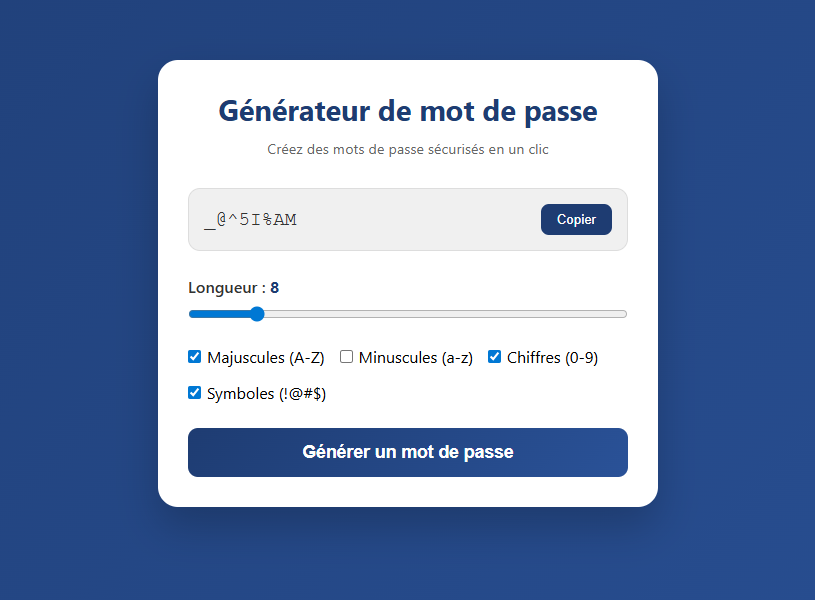
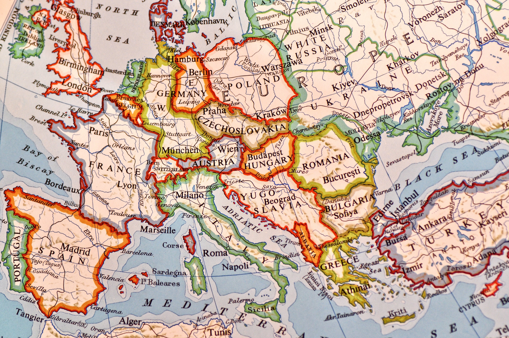

Projects
accroche
Générez des mots de passe vraiment sécurisés en un clic. Cet outil répond à un besoin essentiel : créer des mots de passe uniques, complexes et impossibles à deviner, sans avoir à les inventer soi-même.
La plupart des utilisateurs choisissent des mots de passe faciles à retenir… et donc faciles à pirater. Cette application élimine ce risque en générant des mots de passe aléatoires selon vos critères (longueur, types de caractères, etc.).
Tester le générateur
Histoire
Dans un village perché entre deux montagnes, là où le vent raconte ce que les livres ont effacé, vivait un vieil homme qu'on appelait le Gardien. Chaque soir, les enfants venaient s'asseoir autour de lui pour écouter une histoire venue d'un autre bout du monde : un conte russe où un ours parlait aux étoiles, une légende sénégalaise sur la naissance du fleuve, ou une fable japonaise à peine plus longue qu'un souffle.
Le Gardien ne possédait aucun livre. Il portait les histoires dans sa mémoire, comme d'autres portent des pierres précieuses. Les voyageurs faisaient un détour pour l'entendre. En échange, ils lui offraient une histoire nouvelle, glanée ailleurs. Ainsi grandissait la bibliothèque invisible.

Restau
Imaginez un endroit où vos pauses déjeuner riment avec évasion, et vos après-midi shopping avec plaisir gustatif. C'est le concept de notre futur ensemble : un restaurant au cadre chaleureux et épicé, directement relié à un centre commercial moderne et lumineux.
Après avoir dégusté des plats faits maison, élaborés à partir de produits frais et de saison, vous pourrez enchaîner sur une séance de shopping sans même avoir à sortir. En famille, entre amis ou seul pour une parenthèse détente, ce lieu unique vous permettra de combiner l'utile à l'agréable : se faire plaisir en mangeant bien, puis se faire plaisir en craquant pour les dernières tendances.